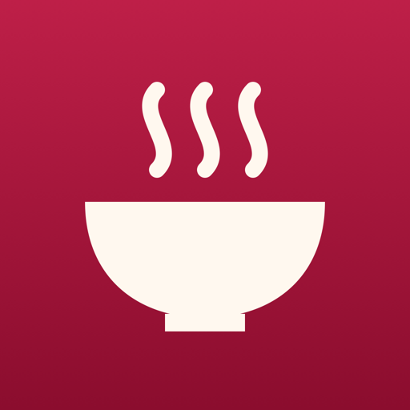

그릇
가게 · 여기 또 갈 만한가?
- 동
근처 가면 일부러 들를 집
- 은
길을 돌아서라도 갈 집
- 금
이 집 하나 먹으러 여행 갈 집
그릇을 안 줘도 돼요. 그냥 기록만 하면 지도에 작은 점으로 남아요.
오늘 이거 먹은 거 아니에요?▼
[ HANKKI : 한끼 ]
음식 사진은 늘 찍던 대로 찍으세요. 한끼가 사진첩에서 찾아 보여 주면, 고르고 몇 가지만 적으면 끝이에요. 맛있던 집은 그릇 색 핀이 되어 지도에 남아요.
기록하는 법
한끼를 켤 필요 없어요. 평소처럼 찍으면 사진첩에 있는 걸 한끼가 찾아요.
식당에 머물다 나왔을 때, 그 사이 찍은 음식 사진이 있을 때만 알려요. 사진이 없으면 묻지 않아요.
가게만 있으면 저장돼요. 메뉴도 기분도 감상평도 비워도 되고, 빈 칸은 화면에서 자리째 빠져요.
다시 가고 싶은 만큼 동·은·금 그릇을 매겨 두면, 핀 색만 봐도 어디가 좋았는지 보여요.
네이버·카카오·구글·애플 지도에서 가게를 공유 › 복사한 뒤 한끼를 열면 「복사한 가게 쓸래요?」 하고 물어봐요. 이름과 주소, 위치가 한 번에 채워져요.
사진에 위치가 남아 있으면 근처에 이미 기록한 가게를 「혹시 여기?」 하고 먼저 보여 줘요.
평가
가게 · 여기 또 갈 만한가?
근처 가면 일부러 들를 집
길을 돌아서라도 갈 집
이 집 하나 먹으러 여행 갈 집
그릇을 안 줘도 돼요. 그냥 기록만 하면 지도에 작은 점으로 남아요.
메뉴 · 이 메뉴 어땠나?
메뉴마다 따로 매겨요. 같은 집이라도 강추 메뉴와 별로인 메뉴가 갈려요.
그날 · 오늘 이 한 끼 어땠나?
0.5부터 5.0까지. 메뉴 점수 평균이 아니라 그날 기분을 따로 남겨요. 밀어서 바꿔 보세요.
가게 · 어떤 성격의 집인가?
지도
핀 색은 그릇 색이에요. 확대하면 핀 옆에 평균 기분과 다녀온 횟수가 붙어요. 아래 시트를 올리면 최근에 간 순, 그릇 순, 기분 순으로 볼 수 있어요.
가게 이름, 종류, 메뉴, 감상평까지 한 칸에서 찾아요. 「라멘」이라고 치면 라멘을 먹은 집이 다 나와요.
친구에게 받은 모음은 레이어로 따로 얹혀요. 내 기록과 섞이지 않고, 켜고 끌 수 있어요. 눌러 보세요.
쌈 채소를 계속 채워 줌4.03번 방문
지난 미식
지난 사진에서 음식을 찾아, 같은 날 같은 곳에서 찍은 사진끼리 한 끼로 묶어 보여 줘요. 넘기기만 해서는 아무것도 저장되지 않아요.
「아, 여기!」 싶은 카드를 누르면 그 사진들로 기록이 시작되고, 저장하면 보던 자리로 돌아와 이어서 구경해요.
음식인지 아닌지는 iPhone 안에서 가려요. 사진이 밖으로 나가지 않아요. 위치 정보가 있는 사진만 봐요.
10월 17일 대전 갈마동 · 사진 4장
10월 9일 서울 망원동 · 사진 3장
9월 28일 부산 해운대 · 사진 6장
기록됨9월 21일 대전 은행동 · 사진 2장
9월 14일 전주 한옥마을 · 사진 3장
탭하면 이 사진들로 기록을 시작해요
개인정보
기록은 내 iPhone과 내 iCloud에만 남아요. 한끼에는 서버가 없어서, 만든 사람도 들여다볼 방법이 없어요.
계정도, 로그인도, 광고도 없어요. 분석 도구도 넣지 않았어요.
자주 묻는 질문
네. 지도 오른쪽 아래 ＋를 누르면 사진 없이 시작해요. 사진은 나중에 붙여도 돼요.
먹고 나오면 알림을 받을 때만 필요해요. GPS를 계속 켜 두지 않고 머물다 떠난 것만 알아채서 배터리 부담이 작아요. 허용하지 않아도 앱을 열면 오늘 찍은 음식 사진이 카드로 떠요.
고른 사진만 볼 수 있어서, 사진첩에서 음식 사진을 찾아 주는 기능이 멈춰요. 직접 고른 사진으로 기록하는 건 그대로 돼요.
지금은 iPhone 전용이에요. 기록은 내 iCloud에 저장돼서 iPhone을 바꿔도 이어져요.
아니요. 받은 모음은 내 기록과 따로 보관돼요. 지워도 내 방문 횟수나 평균은 그대로예요.

iPhone에서 먼저 나와요. 나오면 이 페이지에서 바로 알려 드릴게요.